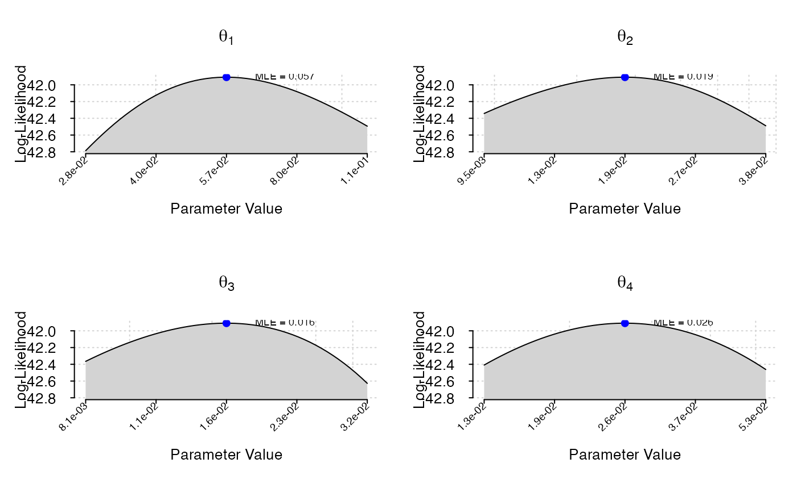

get_batch_profile_lik.Rdget_batch_profile_lik is a wrapper function that performs profile likelihood analysis for multiple parameters of a fitted corHMM object. It allows exploration of the likelihood surface by evaluating the likelihood at various points along the parameter space.
get_batch_profile_lik(corhmm_obj,
range_factor,
n_points,
verbose=FALSE,
ncores=NULL,
dredge=FALSE)A fitted corHMM object representing the model for which profile likelihood analysis is to be performed.
A numeric factor determining the range over which to generate points for the profile likelihood analysis. This value is used to calculate the bounds around the maximum likelihood estimates (MLEs) for each parameter.
The number of points to generate for each parameter along its profile likelihood curve.
Whether to print messages about which parameter is being optimized.
The number of processor cores to be used for parallel computation. Default is NULL, which uses a single core.
Logical value indicating whether to include model penalization factors such as pen_type and lambda from the fitted corHMM object. Default is FALSE.
This function performs a profile likelihood analysis for each parameter in a fitted corHMM model. It evaluates the likelihood at logarithmically spaced points around the maximum likelihood estimates (MLEs) for the parameters. If dredge is set to TRUE, the function also considers model penalization terms.
The function works by first generating a set of points along a logarithmic scale for each parameter, then fixing one parameter at a time while optimizing over the others. The resulting profile likelihood values are returned for each parameter.
Parallel computation can be enabled using the ncores argument to speed up the analysis.
A list containing the profile likelihood results for each parameter. Each entry in the list corresponds to a parameter and contains the profile likelihood values across the range of points evaluated. The original corHMM object is also included in the output.
corHMM for fitting hidden Markov models to phylogenetic data.
# \donttest{
# Assuming you have a fitted corHMM object:
data(primates)
phy <- multi2di(primates[[1]])
data <- primates[[2]]
corhmm_fit <- corHMM(phy = phy, data = data, rate.cat = 1)
#> Warning: Branch lengths of 0 detected. Adding 1.49011611938477e-08
#> State distribution in data:
#> States:0|00|11|1
#>
#> Counts:291021
#>
#> Beginning thorough optimization search -- performing0random restarts
#> Finished. Inferring ancestral states usingmarginalreconstruction.
profile_results <- get_batch_profile_lik(corhmm_fit, range_factor = 2, n_points = 50)
plot_batch_profile_lik(profile_results)

# }